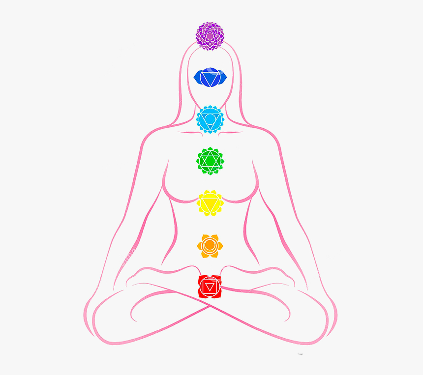

Agenda tu evaluación GRATIS!
Somos un equipo multidisciplinario que ofrece cuidados integrales a través de terapias complementarias. Compuesto por psicólogos, enfermeras, kinesiólogos, terapeutas ocupacionales y educadores, nuestro enfoque holístico aborda tanto los aspectos físicos como emocionales. Nos dedicamos a crear un ambiente acogedor y a diseñar planes de tratamiento personalizados que promuevan el bienestar y la resiliencia. Estamos aquí para acompañarte en tu proceso de sanación y ayudarte a alcanzar un estilo de vida saludable y equilibrado.

Encuéntranos en nuestras dos sedes:
Sede Santiago: Av Las Condes 1234
Sede Concepción: Av Las Palmas 9876